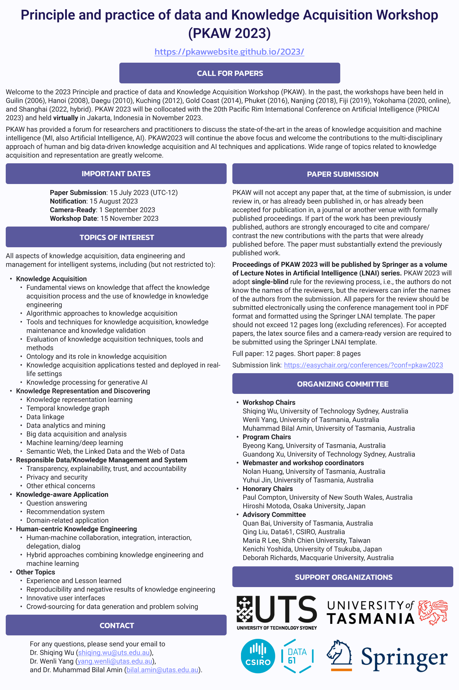

Notice
- For authors whose papers are rejected by PRICAI 2023, please re-submit to PKAW 2023 through the submission link ASAP. The submission link is still open.
- Following extensive discussion with the organizing committee of PRICAI 2023, we are thrilled to announce the registration fee for non-student has been reduced from $450 USD to $170 USD! For student registration, it has been reduced from $350 USD to $130 USD! More details will be released on the website very soon.
Welcome to PKAW 2023
Welcome to the 2023 Principle and practice of data and Knowledge Acquisition Workshop (PKAW). In the past, the workshops have been held in Guilin (2006), Hanoi (2008), Daegu (2010), Kuching (2012), Gold Coast (2014), Phuket (2016), Nanjing (2018), Fiji (2019), Yokohama (2020, online), and Shanghai (2022, hybrid). PKAW 2023 will be collocated with the 20th Pacific Rim International Conference on Artificial Intelligence (PRICAI 2023) and held virtually in Jakarta, Indonesia in November 2023.
PKAW has provided a forum for researchers and practitioners to discuss the state-of-the-art in the areas of knowledge acquisition and machine intelligence (MI, also Artificial Intelligence, AI). PKAW2023 will continue the above focus and welcome the contributions to the multi-disciplinary approach of human and big data-driven knowledge acquisition and AI techniques and applications.
AI is changing the way in which organizations innovate and communicate their processes, products, and services. Also, in our daily life, AI-embedded devices such as smart speakers are about to become widely used, which extends the possibility of acquiring knowledge from users’ behavior observed through the interaction between those devices and their users. Knowledge acquisition and learning from big data are becoming more challenging than ever. Various knowledge can be acquired not only from human experts but also from heterogeneous data. Multidisciplinary research, including knowledge engineering, artificial intelligence and machine learning, human-computer interaction, etc., is required to meet the challenge. We invite authors to submit papers on all aspects of these areas.
Furthermore, not only in the engineering field but also in the social science field (e.g., economics, social networks, and sociology), recent progress in knowledge acquisition and data engineering techniques is realizing interesting applications. We also invite submissions that present applications tested and deployed in real-life settings and lessons learned during this process.
Proceedings of PKAW 2023 will be published by Springer as a volume of Lecture Notes in Artificial Intelligence (LNAI) series. For more details, please visit here.
News
(07 August) For authors whose papers are rejected by PRICAI 2023, please re-submit to PKAW 2023 through the submission link ASAP. The submission link is still open.(31 July) Following extensive discussion with the organizing committee of PRICAI 2023, we are thrilled to announce the registration fee is reduced. Hence, the submission date has been extended to 3 August 2023.
(17 July) The submission date has been extended to 31 July 2023!
(11 May) Program Committee Members has been released.
(05 May) We have confirmed that the proceedings of PKAW 2023 will be published by Springer as a volume of Lecture Notes in Artificial Intelligence (LNAI) series.
(01 April) "Call for Papers has been released.
Important Dates
3 August 2023
31 August 2023
07 September 2023
15 November 2023
Flyer

Please download the Flyer of PKAW 2023. [Download]CALL FOR PAPERS
PKAW (Principle and Practice of Data and Knowledge Acquisition Workshop) was established in 1980s as an integral part of PRICAI (Pacific Rim International Conference on Artificial Intelligence). PKAW 2023 will be held virtually at the 20th Pacific Rim International Conference on Artificial Intelligence (PRICAI 2023) in Jakarta, Indonesia. A wide range of topics related to knowledge acquisition and representation are greatly welcome.
Important Dates
- Paper Submission: 3 August 2023
- Notification: 31 August 2023
- Camera-Ready Submission: 7 September 2023
- Workshop Date: 15 November 2023
Areas of Interest
All aspects of AI, machine learning, knowledge acquisition, data engineering and management for intelligent systems, including (but not restricted to):- Knowledge Acquisition
- Fundamental views on knowledge that affect the knowledge acquisition process and the use of knowledge in knowledge engineering
- Algorithmic approaches to knowledge acquisition
- Tools and techniques for knowledge acquisition, knowledge maintenance and knowledge validation
- Evaluation of knowledge acquisition techniques, tools and methods.
- Ontology and its role in knowledge acquisition
- Knowledge acquisition applications tested and deployed in real-life settings
- Knowledge Representation and Discovering
- Knowledge representation learning
- Temporal knowledge graph
- Data linkage
- Data analytics and mining
- Big data acquisition and analysis
- Machine learning/deep learning
- Semantic Web, the Linked Data and the Web of Data
- Responsible Data/Knowledge Management and System
- Transparency, explainability, trust, and accountability
- Privacy and security
- Other ethical concerns
- Knowledge-aware Application
- Question answering
- Recommendation system
- Domain-related application
- Human-centric Knowledge Engineering
- Human-machine collaboration, integration, interaction, delegation, dialog
- Hybrid approaches combining knowledge engineering and machine learning
- Other Topics
- Experience and Lesson learned
- Reproducibility and negative results of knowledge engineering
- Innovative user interfaces
- Crowd-sourcing for data generation and problem solving
Paper Submission
PKAW will not accept any paper that, at the time of submission, is under review for, has already been published in, or has already been accepted for publication in, a journal or another venue with formally published proceedings. If part of the work has been previously published, authors are strongly encouraged to cite and compare/contrast the new contributions with the parts that were already published before. The paper must substantially extend the previously published work.
PKAW 2023 will adopt single-blind rule for the reviewing process, i.e., the authors do not know the names of the reviewers, but the reviewers can infer the names of the authors from the submission.
Proceedings of PKAW 2023 will be published by Springer as a volume of Lecture Notes in Artificial Intelligence (LNAI) series. All papers for the review should be submitted electronically using the conference management tool in PDF format and formatted using the Springer LNAI template. The main content of the paper should not exceed 12 pages long (excluding references). For accepted papers, the latex source files and a camera-ready version are required to be submitted using the Springer LNAI template. For Springer LNAI format templates, please visit the Springer’s website below.
Page limit:
Full paper: 12 pages
Short paper: 8 pages
Contact
For any question, please send your email to Dr. Shiqing Wu (shiqing.wu@uts.edu.au) Dr. Wenli Yang (yang.wenli@utas.edu.au) and Dr. Muhammad Bilal Amin (bilal.amin@utas.edu.au).ORGANIZING COMMITTEE
Workshop Chairs

Shiqing Wu
University of Technology Sydney, Australia

Wenli Yang
University of Tasmania, Australia
Muhammad Bilal Amin
University of Tasmania, Australia
Program Chairs

Byeong Kang
University of Tasmania, Australia

Guandong Xu
University of Technology Sydney, Australia
Publicity Chair

Yan Kong
Nanjing University of Information Science & Technology, China
Webmaster and Workshop Coordinators
Hai Huang
University of Tasmania, Australia
Yuhui Jin
University of Tasmania, Australia
Honorary Chairs

Paul Compton
University of New South Wales, Australia

Hiroshi Motoda
Osaka University, Japan
Advisory Committee

Quan Bai
University of Tasmania, Australia

Qing Liu
Data61, CSIRO, Australia

Maria R Lee
Shih Chien University, Taiwan

Kenichi Yoshida
University of Tsukuba, Japan

Deborah Richards
Macquarie University, Australia
PC MEMBERS
The University of New South Wales, Australia
Japan Advanced Institute of Science and Technology, Japan
Jilin University of Finance and Economics, China
National Institute of Advanced Industrial Science and Technology (AIST), Japan
University of Technology Sydney, Australia
Auckland University of Technology, New Zealand
Auckland University of Technology, New Zealand
Central China Normal University, China
Aoyama Gakuin University, Japan
Nihon University, Japan
University of Wollongong, Australia
University of Technology Sydney, Australia
University of Tasmania, Australia
Keio University, Japan
Hefei University of Technology, China
University of Wollongong, Australia
Nara Women's University, Japan
Zhejiang University, China
PROGRAM
TBAPrinciple and practice of data and Knowledge Acquisition Workshop (PKAW 2023)10 November, 2023Zoom link: https://utas.zoom.us/j/81727659366 |
|
|---|---|
| Time (GMT+8) | Session |
| 9:00-9:10 AM | Opening address |
| 9:10-10:10 AM | Keynote Talk: Deep Reinforcement Learning (DRL) with Human Intervention Applications Speaker: Dr. Zehong Cao, University of South Australia, Australia Chair: Dr. Qing Liu, Data61, CSIRO, Australia |
| 10:10-10:20 AM | Break |
| 10:20-11:10 AM (Each paper has 20 mins for presentation and 5 mins for Q&A) |
Session 1: Text Analysis Chair: Dr. Shiqing Wu, University of Technology Sydney, Australia Title: Multi-stage Information Retrieval for Vietnamese Legal Texts Authors: Minh Pham, Thanh Nguyen and Hop Do Title: KATSum: Knowledge-aware Abstractive Text Summarization Authors: Guan Wang, Weihua Li, Edmund Lai and Jianhua Jiang |
| 11:10-11:20 AM | Break |
| 11:20 AM-12:35 PM (Each paper has 20 mins for presentation and 5 mins for Q&A) |
Session 2: Machine Learning Theories and Algorithms Chair: Dr. Wenli Yang, University of Tasmania, Australia Title: Achieving Transparency in Distributed Machine Learning with Explainable Data Collaboration Authors: Anna Bogdanova, Akira Imakura, Tetsuya Sakurai, Tomoya Fujii, Teppei Sakamoto and Hiroyuki Abe Title: Learning State Transition Rules from Hidden Layers of Restricted Boltzmann Machines Authors: Koji Watanabe and Katsumi Inoue Title: Distributed Interaction Graph Construction for Dynamic DCOPs in Cooperative Multi-agent Systems Authors: Brighter Agyemang, Fenghui Ren and Jun Yan |
| 12:35-12:40 PM | Closing remark |
REGISTRATION
Registration is now available for both the author(s) and general participants. You may pay the registration fee and submit a registration request here. If you are an author of an accepted paper, please fill in your Paper ID in the registration form. For example, if your paper ID is 1234, then fill in "PKAW_1234". Incorrect paper ID (such as, 1234, or pkaw1234) will lead to the failure of registration.
The details of registration fee is listed below. Authors and general participants must register using the registration link above and transfer the registration fee using the bank details provided in the registration form before the deadline.
Note: Student registrants must send a letter from their University/Institution confirming their studentship to pricai2023@gmail.com.| Non-Student | Student | Due date | |
|---|---|---|---|
| PreConference(1-day) | $170 USD | $130 USD | 16 November 2023 |
Camera-ready Submission
The link for camera-ready submission has been sent to author via emails.Please follow the instruction attached in the email to complete the submission by 16 Oct 2023.
KEYNOTE SPEAKERS
TBADr. Qinghua Lu
Principal Research Scientist and team Leader of Software Engineering for AI (SE4AI) Research Team and Responsible AI Science Team at Data61, CSIRO
Operationalising Responsible AI: CSIRO Data61’s Approach
Abstract: Although artificial intelligence (AI) is solving real-world challenges and transforming industries, there are serious concerns about its ability to behave and make decisions in a responsible way. To address the responsible AI challenges, a number of AI ethics principles frameworks have been published recently, which AI systems are supposed to conform to. However, without further best practice guidance, practitioners are left with nothing much beyond truisms. In addition, significant efforts have been put on algorithm-level solutions which mainly focus on a subset of mathematics-amenable ethical principles (such as privacy and fairness). However, issues (including ethical issues) can occur at any step of the development lifecycle crosscutting many AI, non-AI and data components of systems beyond AI algorithms and models. To close the gap in operationalising responsible AI and make Australia’s adoption of AI safe, secure and reliable, CSIRO Data61 has started a responsible AI science initiative and established a responsible AI research team since 2021. The aim of the team is to develop Innovative software engineering tools and technologies that professional developers, end-users and other stakeholders of AI systems can use to make both AI solutions and their development processes responsible. In this talk, we will introduce our research projects and early outcomes on operationalising responsible AI.Bio: Dr. Qinghua Lu is a principal research scientist and leads the Responsible AI science team at CSIRO’s Data61, Australia. She received her PhD from University of New South Wales in 2013. Her current research interest includes responsible AI, software engineering for AI, software architecture, and blockchain. She has published 100+ academic papers in international journals and conferences. She is leading a few major Responsible AI projects at CSIRO’s Data61. Her recent paper “Towards a Roadmap on Software Engineering for Responsible AI“ won the ACM Distinguished Paper Award.
Dr. Jimmy Cao
Senior Lecturer in AI at University of South Australia
Deep Reinforcement Learning (DRL) with Human Intervention Applications
Abstract: DRL considers the problem of machine agent learning to make decisions by trial and error and to make decisions to maximize rewards by continuously interacting with the environment. DRL has been used for a diverse set of applications, such as: Robotics, Games, Transportation, and Healthcare.In this talk, the fundamentals of DRL will be introduced and how to design a single agent or multi-agent system using Unity platform to fit the user needs. Then, to interact with human knowledge, the reward learning from human preferences and behaviours will be presented used to resolve complex DRL tasks, such as MuJoCo games and physical robot controls. The naturally inspired human perceptions are beneficial for precise reward design and can be applied to state-of-the-art RL systems with human-in-the-loop learning, such as human-autonomy teaming systems. In addition, the DRL for autonomous driving in transportation applications will be demonstrated and explores a solution for driving safety
Bio: Dr. Jimmy Cao is a Senior Lecturer in AI and leads humanmachine interaction and learning, connecting with Research Centres of Industrial AI and Virtual and Interactive Environments at the University of South Australia (UniSA). He received the prestigious Australian Research Council - Discovery Early Career Researcher Award (DECRA) Fellowship 2022 and holds an exceptional UniSA Enterprise Fellowship from 2021. He completed the PhD degree at the Australian AI Institute, the University of Technology Sydney in 2017 and has authored more than 70 papers published in toptier ACM/IEEE journals and conferences. He is an Associate Editor of IEEE T-FS and T-NNLS, and a Chief Investigator of competitive national and international grants supported by government and industry.